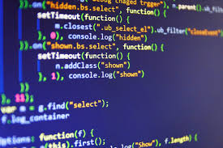

The subject of "fundamentals of cumputing engineering" is divided into 6 modules. The first 3 modules talk about computer engineering in society, current paradigms and trends in systems and applications, and information, data and big data. This covers:
-
module 1: the background and historical perspectives, the current context of computer science and computer science as a degree and profession.
-
module 2: harware, software, operating systems, networks and new trends.
-
module 3: information, data and data foundations
The next 3 modules consits more on the practical side of the course. This part of the subject talks about software development, using github and an introduction on to web programming with both html and css. This covers:
-
module 4: introduction to software development, software development tools and github webpage.
-
module 5: introduction to web programming and hypertext markup language (HTML).
-
module 6: casscading style sheet (CSS).
Also, we have many practical works like research topics and programming webpages. These proyects, apart from
our exams, make up our subject grade.
Talking about exams, this subject has 3 main exams and 2 practical works. The first practical work was research project that,
in my case, it was based on medical robotics. The second practical work was a webpage that we needed to create using visual studio code.
The fisrt 2 exams where partial ones, the first one contained the first 3 modules and the second partial had the last 3. The final exam
is in case you failed one or both of the partial exams.
